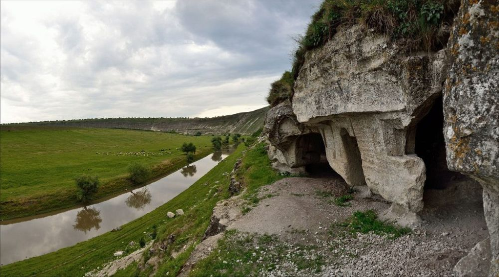

Descoperă Orheiul Vechi - Călătorie în trecutul Moldovei
Orheiul Vechi este un sit arheologic unic în Republica Moldova, oferind o privire în istoria și cultura străveche:
-

Mănăstirea - Loc de spiritualitate
O mănăstire pitorească construită în stânci, cu o atmosferă liniștită și spirituală.
-

Peșteri antice - Cămine din stâncă
Orheiul Vechi găzduiește peșteri săpate în stâncă, folosite de-a lungul istoriei.
-

Ruine istorice - Amintiri ale trecutului
Se pot vizita ruinele unor așezări vechi și biserici în stil medieval.
-

Punct de belvedere - Priveliște panoramică
Un loc perfect pentru a admira peisajul natural și siturile istorice ale Orheiului Vechi.
-

Muzeul complex - Înțelegerea istoriei
Un muzeu care explică și contextualizează descoperirile arheologice din zonă.
Concluzii
Orheiul Vechi este o fereastră către trecutul Moldovei, oferind o perspectivă captivantă asupra evoluției culturii și societății.